Krümelbahn
KrümelbahnSolingen's Eisenbahnen
 EisenbahnliteraturEisenbahnfilmeNahverkehrsliteraturÜberregionale LiteraturÜberregionale FilmeArtikel in Zeitschriften
EisenbahnliteraturEisenbahnfilmeNahverkehrsliteraturÜberregionale LiteraturÜberregionale FilmeArtikel in ZeitschriftenEisenbahnliteratur
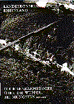 |
Werner, Ernst Die Eisenbahnbrücke über die Wupper bei Müngsten Landeskonservator Rheinland Arbeitsheft 5, Technische Denkmäler 1973 |
| Rieppel, Anton Die Thalbrücke bei Müngsten Klassiker der Technik, VDI-Verlag 1986 ISBN 3-18-400762-6 |
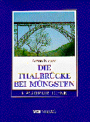 |
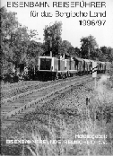 |
Eisenbahnfreunde Remscheid Eisenbahn Reiseführer für das Bergische Land 1996/97 |
| Eisenbahnfreunde Remscheid Periodika, Erscheinen mit Heft 58 eingestellt |
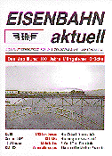 |
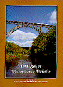 |
Schmorleiz/Tappert 100 Jahre Müngstener Brücke Die Verbindung zwischen den Städten Solingen und Remscheid Verlag B.Boll 1997 |
| Berg, Adolf von Die Thalbrücke bei Müngsten und die Strecke Remscheid - Solingen rga-Buchverlag 1997 ISBN 3-923495-43-9 |
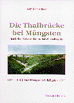 |
  |
Kaiß, Kurt Der Brückenschlag bei Müngsten Die Bahnlinie Solingen - Remscheid Rheinisch-Bergische Eisenbahngeschichte Heft 1 völlig überarbeitete Auflage 2013 Verlag A.Kaiß, Leichlingen ISBN 978-3-9809357-8-4 |
| Kaiß, Kurt/Zimmermann, Michael Die Korkenzieherbahn Auf Nebenbahngleisen von Solingen nach Vohwinkel Rheinisch-Bergische Eisenbahngeschichte Heft 2 Verlag A.Kaiß, Leichlingen 1998 ISBN 3-9806103-0-6 |
 |
 |
Inkeller, Rudolf Zwischenhalt Das Bahnbetriebswerk in Ohligs Verlag A.Kaiß, Leichlingen 2003 ISBN 3-9806103-8-1 |
| Soechting, Dirk Auf Schienen unterwegs Die Eisenbahnbrücke bei Müngsten über die Wupper Sutton-Verlag Erfurt 2005 ISBN 3-89702-892-1 |
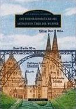 |
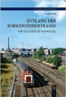 |
Kohl, Manfred Entlang der Korkenziehertrasse von Solingen bis Vohwinkel Sutton Verlag, Erfurt 2012 ISBN 978-3954000234 |
| Pillmann, Zeno Eisenbahnchronik Bergisches Land Das Bergische Städtedreieck Wuppertal - Remscheid - Solingen Band 1: Strecken und Bahnbetriebswerke Eisenbahn-Kurier Verlag, Freiburg 2020 ISBN 978-3844664119 |
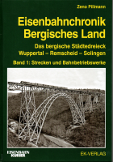 |
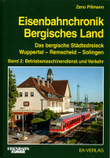 |
Pillmann, Zeno Eisenbahnchronik Bergisches Land Das Bergische Städtedreieck Wuppertal - Remscheid - Solingen Band 2: Betriebsmaschienendienst Eisenbahn-Kurier Verlag, Freiburg 2020 ISBN 978-3844664225 |

Eisenbahnfilme
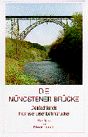 |
Henning, Dieter Die Müngstener Brücke Deutschlands höchste Eisenbahnbrücke Stadt Solingen 1997, VHS-Video |
| Heuschele, K.D. Symphonie für Brücke, Dampf und Orchester Faszination Dampfeisenbahn: Das Müngstener Brückenfest in Solingen Solinger Tageblatt 2006, DVD |
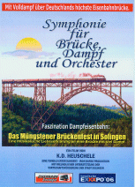 |
Nahverkehrsliteratur
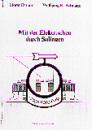 |
Dirlam, Horst/Reimann, Wolfgang Mit der Elektrischen durch Solingen Verlag Monika Reimann, Wuppertal 1988 ISBN 3-925298-02-9 |
| Höltge, Dieter Straßen- und Stadtbahnen in Deutschland Band 5: Bergisches und Siegerland von Wuppertal bis Bonn Eisenbahn-Kurier Verlag, Freiburg 1996 ISBN 3-88255-333-2 |
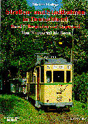 |
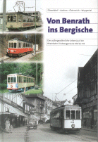 |
Autorenteam Von Benrath ins Bergische Der außergewöhnliche Lebenslauf der Rheinbahn-Triebwagenserie 106 bis 119 Bergische Museumsbahnen e.V. Wuppertal, Wuppertal 1999 |
| Eidam, Jürgen/Reimann, Wolfgang Mit 5 und 25 unterwegs Eine Straßenbahn-Zeitreise von Wuppertal nach Solingen Verlag Wolfgang R. Reimann, Wuppertal 2012 ISBN 3-981516-61-3 |
 |
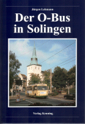 |
Lehmann, Jürgen Der O-Bus in Solingen Verlag Kenning, Nordhorn 2002 ISBN 3-933613-55-8 |
| Lehmann, Jürgen Straßenbahn und Obus in Solingen Verlag Kenning, Nordhorn 2007 ISBN 978-3-933613-86-8 |
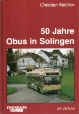 |
Walther, Christian 50 Jahre Obus in Solingen Eisenbahn-Kurier Verlag, Freiburg 2002 ISBN 3-88255-842-3 |
| Lehmann, Jürgen Mit dem Obus durch Solingen Verlag Kenning, Nordhorn 2019 ISBN 978-3-944390-10-9 |
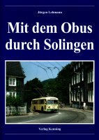 |
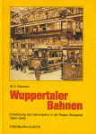 |
Reimann, Wolfgang Wuppertaler Bahnen Eisenbahn-Kurier Verlag, Freiburg 1982 ISBN 3-88255-560-2 |
Überregionale Literatur
Arbeitskreis Bahnen Wuppertal
Verkehrsknoten Wuppertal
Eisenbahn-Kurier Verlag, Freiburg 2008
ISBN 978-3-88255-249-2
Belz, Karl-Wilhelm
Eisenbahnen in der industriellen Revolution: Ein frühes Wuppertaler Projekt
Beiträge zur Geschichte und Heimatkunde des Wuppertals, Bd.27
Born-Verlag, Wuppertal 1979
ISBN 3-87093-027-7
Eisenbahnfreunde Remscheid e.V.
Eisenbahnen in Remscheid
Martina Galunder Verlag, Nümbrecht 2005
ISBN 3-89909-060-8
Frenz, Eckehard/Reimann, Wolfgang
Tram-Revue Wuppertal 1952-1962
Buchhandlung v. Mackensen, Wuppertal 2010
ISBN 978-3-00-031531-2
Grieger/Grünberg/Händeler/Nordmeyer/Schüttke/Ulrich
Eisenbahnen im Bergischen Land
Eine Fotodokumentation
Martina Galunder Verlag, Nümbrecht 2006
ISBN 3-89909-070-5
Eisenbahnen im Bergischen Land Band 2
Eine Fotodokumentation
Martina Galunder Verlag, Nümbrecht 2009
ISBN 3-89909-090-1
Heßler, Frank
150 Jahre Eisenbahngeschichte in und um Wuppertal
Verlag Kierdorf, Remscheid
ISBN 3-89118-043-8
Inkeller, Rudolf
Die Wupper-Talbahn
Geschichte einer Nebenbahn zwischen Berg und Mark
Lok-Report, Münster 1991
ISBN 3-921989-38-0
Inkeller, Rudolf
Die Wuppertalbahn
Die Eisenbahnverbindung Wuppertal - Radevormwald - Brügge(Westf.)
Rheinisch-Bergische Eisenbahngeschichte 5
Verlag A.Kaiß, Leichlingen 2004
ISBN 3-9806103-7-3
Inkeller, Rudolf
Das Bahnbetriebswerk Wuppertal-Steinbeck
Bahnbetriebswerke der BD Wuppertal, Band 1
Verlag A.Inkeller, Wuppertal 2005
ISBN 3-9809930-0-0
Inkeller, Rudolf
Das Bahnbetriebswerk Remscheid-Lennep
Bahnbetriebswerke der BD Wuppertal, Band 2
Verlag A.Inkeller, Wuppertal 2009
ISBN 978-3-9809930-1-2
Kaiß, Kurt
Beruf Eisenbahnfotograf
Rückblicke auf 60 Jahre Bahngeschehen im Bergisch-Märkischen Raum
Verlag A.Kaiß, Leichlingen 1999
ISBN 3-9806103-1-4
Kaiß, Kurt
Das Bahnbetriebswerk Opladen
Rheinisch-Bergische Eisenbahngeschichte Heft 4
Verlag A.Kaiß, Leichlingen 2002
ISBN 3-9806103-3-0
Kaiß, Kurt
Der Balkanexpress
Die Eisenbahnverbindung Remscheid-Lennep - Opladen
Rheinisch-Bergische Eisenbahngeschichte Heft 3
Verlag A.Kaiß, Leichlingen 2000
ISBN 3-9806103-2-2
Kaiß, Kurt
Zwischenhalt
Die Eisenbahn in Leichlingen
Verlag A.Kaiß, Leichlingen 2004
ISBN 3-9806103-9-X
Kaiß, Kurt
Das Eisenbahn-Ausbesserungswerk Opladen
Band 1: 1903 - 1945
Verlag A.Kaiß, Leichlingen 2006
ISBN 3-9809357-1-X
Kaiß, Kurt
Das Eisenbahn-Ausbesserungswerk Opladen
Band 2: 1946 - heute
Verlag A.Kaiß, Leichlingen 2011
ISBN 3-9809357-0-1
Kaiß, Kurt
Rückblende
Die Deutsche Bundesbahn in Bildern von Helmut Säuberlich
Verlag A.Kaiß, Leichlingen 2019
ISBN 3-9818345-1-8
Koch/Kowalski/Marschner/Post/Stock/Strack
Eisenbahnen im Oberbergischen und die Geschichte des Bw Dieringhausen
Martina Galunder Verlag, Nümbrecht 2005
ISBN 3-89909-050-0
Menninghaus/Krause/van Kampen
Die Bergisch-Märkische Eisenbahn 1843 bis 1881
Verlag Uhle & Kleimann, Lübbecke 1990
ISBN 3-922657-76-1
Vogelsang, Harald
Das Bw Bochum-Dahlhausen und die Eisenbahn im mittleren Ruhrtal
Eisenbahn-Kurier Verlag, Freiburg 1988
ISBN 3-88255-430-4
Deutsche Bahnbetriebswerke
Bw Solingen-Ohligs - BD Köln
GeraMond
Überregionale Filme
ML HISTORIC FILM bietet historische Filme aus Wuppertal zu den Themen- Straßenbahnen und
- Eisenbahn
an
Artikel in Zeitschriften
Inkeller, Rudolf
Bergische Historie - Das Bahnbetriebswerk Solingen-Ohligs
Eisenbahn-Journal 1-1995
Brinker, Helmut
Solingen Hbf. - Vom Hoffnungsträger zum Schandfleck
Eisenbahn-Kurier 3-1997
Hehl, Markus
100 Jahre jung - Die Müngstener Brücke
Eisenbahn-Kurier 5-1997
Bendig, Ralf
Die Müngstener Brücke wird 100
Eisenbahn Magazin 6-1997
Weihrauch, Manfred
Hundertjährig - Die Müngstener Brücke
N-Bahn Magazin 3-1997
Weihrauch, Manfred
Teiltraum Talbrücke
Eisenbahn Magazin 7-1997
Kaiß, Kurt
Die Eisenbahnverbindung Ohligs-Lennep
Eisenbahn-Journal 11-1997
Kaiß, Kurt
Korkenzieherbahn - Die Nebenbahn Solingen-Vohwinkel
Eisenbahn Magazin 4-1999
Klee, Wolfgang
Im Schatten des Verkümmerns - Die Nordbahn im Wuppertaler Stadtgebiet
Eisenbahn Geschichte Nr.20 (2007)
Pillmann, Zeno
Solingen Hbf. ... der alte und der neue
Eisenbahn-Kurier 9-2007
as
Zwei für Einen - Bahnhofswandel in Solingen
Eisenbahn Magazin 10-2007
pr
Künftig wieder Dampf- und Güterzüge? - Müngstener Brücke länger gesperrt
Eisenbahn Magazin 11-2013
Pillmann, Zeno
Müngstener Brücke - Sanierungsfall über dem Wuppergrund
Eisenbahn Magazin 4-2016
GS
Große Talbrücke nach Müngstener Volbild selbst gebaut - Arbeit nur für Schwindlefreie
N-Bahn Magazin 2-2016
Kaiß, Kurt
Prominente Talquerung zwischen Solingen und Remscheid
Eisenbahn Magazin 7-2022